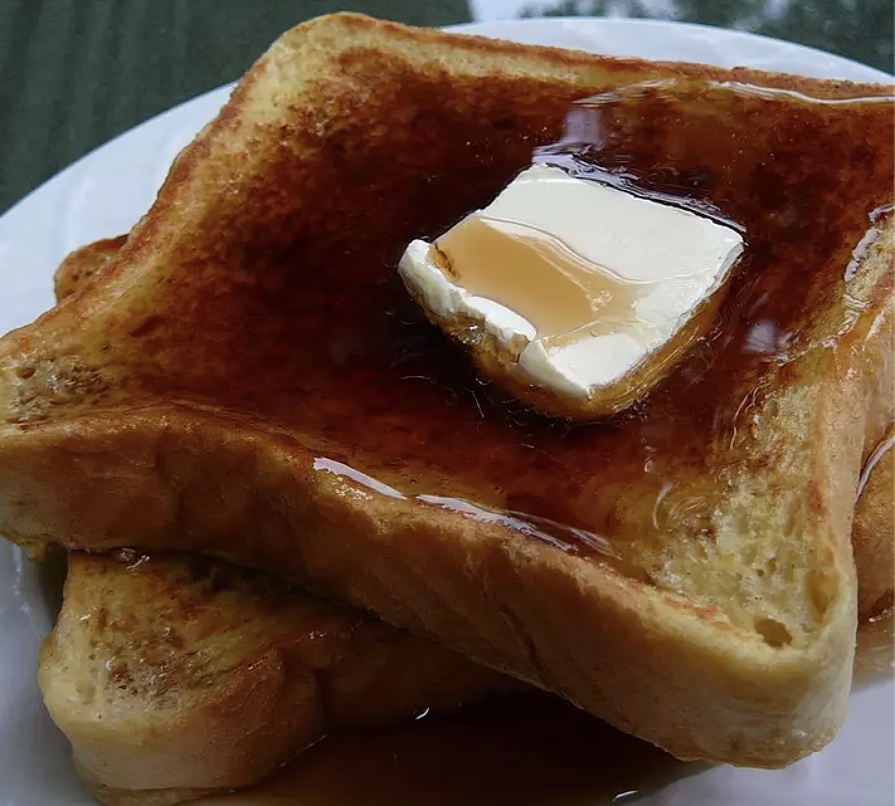

french toast

This is a classic, and tasty, french toast recipe that is perfect
for those lazy Sunday mornings. The kids will be happy and you can surprise
your significant with a yummy and easy breakfast in bed.
All you'll need is a few simple ingredients you probably already have at home
a can do attitude, a pan, and a spatula.
Ingredients
4 (1 inch thick) slices King's Hawaiian Sweet Bread
4 large eggs
1/2 cup milk
1/2 teaspoon vanilla
1/4 teaspoon ground cinnamon
2 tablespoons butter
2 tablespoons maple syrup
any toppings you want (syrup,butter,fresh fruit)
Steps
- Slice bread crosswise so that each slice is about 1-inch thick.
Cut larger slices into halves or thirds, if desired. Set aside.
- In a shallow mixing bowl, whisk together the eggs,
milk, vanilla and cinnamon.
- Quickly dip slices (do not soak) in egg mixture
and cook until golden brown on both sides.
- Keep egg mixture stirred and spices well blended.
- Add your favorite toppings and enjoy